はじめに
昨今、多くの企業が自社の持つデータを分析してビジネスに役立てようとしています。しかし実際のところ、分析シナリオに最適なデータ準備やデータの把握、管理が困難で、データマネジメントには多くの課題が存在しています。
Oracle Cloud Infrastructure Data Catalogは、そのような企業データのフルマネージドのデータ検出および管理を行うソリューションです。Data Catalogを使うと、技術、ビジネスおよび運用に役立つメタデータを管理するための単一のコラボレーション環境を作成できます。データを必要とする誰もが、単一のインタフェースから、専門知識不要でデータを検索することができます。
Data Catalogの主要な機能
-
メタデータの収集：カタログ化したいデータストア（データベースやオブジェクトストレージ）を指定し、Data Catalogの中にメタデータを抽出します。定期的にスケジュール実行も可能です。
-
データへのタグ付け：表や列、ファイルなどのデータを論理的に識別するためのキーワード（自由書式）を設定できます。これにより、特定のキーワードでタグ付けされた全てのデータを検索することができます。
-
ビジネス用語集：組織内であらかじめ決められた用語を使って、データに検索、分類のための目印を付与することができます。
-
データの検索：SQLやRESTではなくキーワードでの検索、表名・列名・ファイル名での検索、特定のタグやビジネス用語に合致するデータの検索を全て行うことができます。
目次 :
- 1.データの準備
- 2.データ・カタログの作成
- 3.Autonomous Databaseからメタデータを収集
- 4.Object Storageからメタデータを収集
- 5.ビジネス用語集とカスタム・プロパティの作成
- 6.メタデータの補完
- 7.データの検索
- 8.おわりに
前提条件
-
Autonomous Data Warehouse(ADW)インスタンスが構成済みであること
※ADBインタンスの作成方法については、 101:ADBインスタンスを作成してみよう を参照ください。 -
Data Catalogを使用するためのユーザーグループ、ポリシーが設定済みであること
※本チュートリアルを進めるうえで必要なポリシーはこちらを参照ください。
所要時間 : 約2時間
1. データの準備
データ・カタログのタスクを行うために必要なデータベース・オブジェクトをSQLスクリプトを実行することで作成します。
- ADMINユーザーでADWに接続し、以下のスクリプトを実行して、sales_historyというユーザーを作成します。
CREATE USER sales_history IDENTIFIED BY Welcome12345#; GRANT CREATE table TO sales_history; GRANT CREATE view TO sales_history; GRANT CREATE type TO sales_history; GRANT CREATE session to sales_history; GRANT UNLIMITED TABLESPACE TO sales_history; GRANT CREATE sequence TO sales_history; GRANT CREATE procedure to sales_history; GRANT CREATE trigger to sales_history; -
Data Catalogで使用するファイルからzipファイルをダウンロードし、解凍します。
- zipファイルの中のDCAT_Livelabs.sqlというSQLスクリプトを実行します。実行すると、いくつかの表が作成されます。
これでデータの準備は完了です。
2. データ・カタログの作成
Data Catalogインスタンスの作成にあたり、1つのフォームを埋めていきます。なお、サービス管理、パッチ適用、バックアップとリストアおよびその他のサービスライフサイクルタスクは、オラクルが行います。
-
OCIコンソールのメニューからアナリティクスとAIをクリックし、データ・レイクの下のデータ・カタログをクリックします。 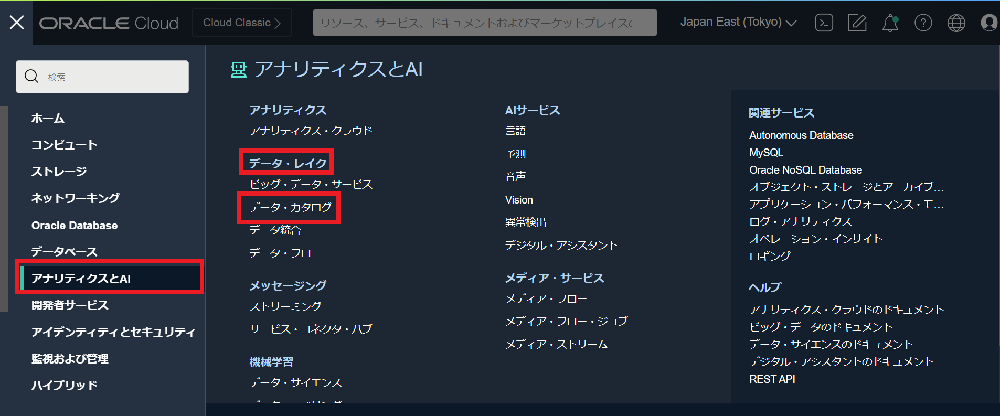
-
データ・カタログの概観が表示されるので、左のリストからデータ・カタログをクリックします。 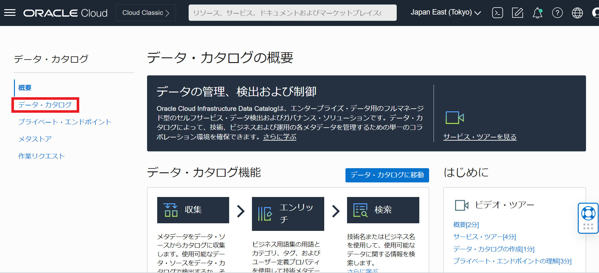
-
データ・カタログのページが表示されるので、左のパネルからカタログを作成するコンパートメントを選択します。
-
データ・カタログの作成をクリックします。 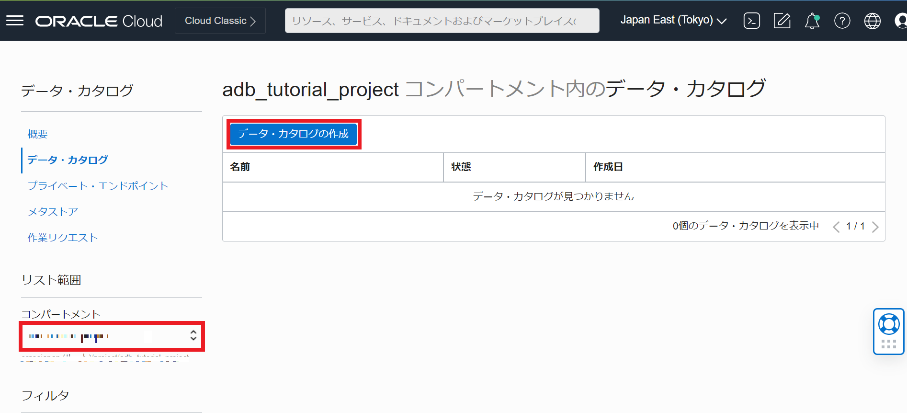
-
再度データ・カタログインスタンスを作成するコンパートメントを選択します。
-
インスタンス名を入力します。 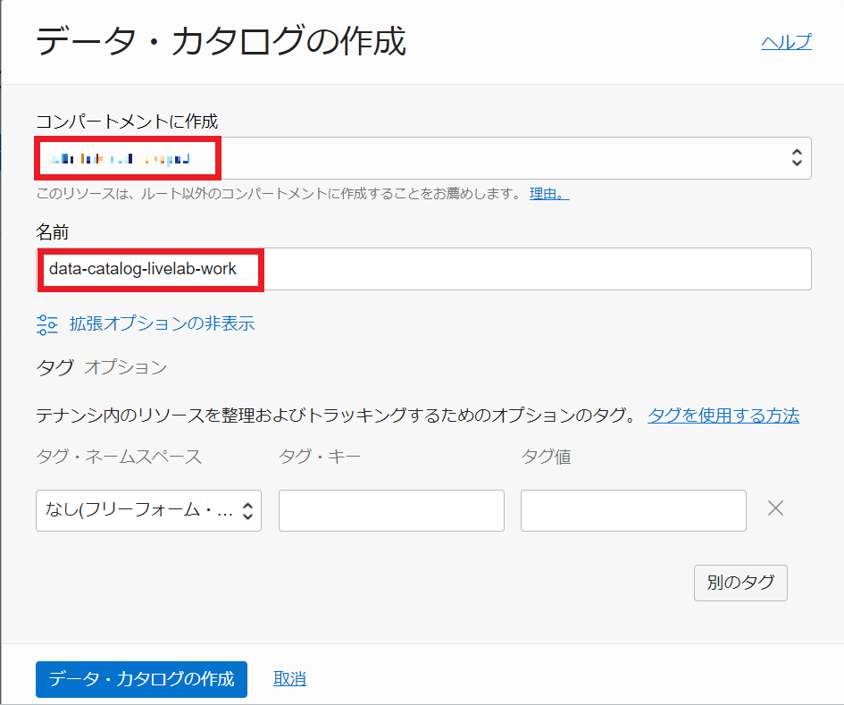
これでデータ・カタログの作成は完了です。
3. Autonomous Databaseからメタデータを収集
データソースは、カタログ内のデータ・アセットで表されます。本チュートリアルでは、前提条件で作成済みのADW用のデータ・アセットを作成します。
その後、接続情報を追加し、ADWからスキーマと表のメタデータを収集します。
3-1. Autonomous Databaseのデータ・アセットの作成
-
データ・カタログインスタンスのホーム画面のクイック・アクションからデータ・アセットの作成をクリックします。 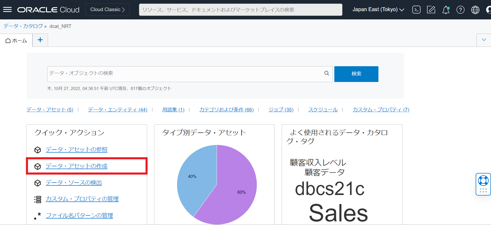
-
データ・アセットの作成パネルから、一意のデータ・アセット名を入力します。
-
オプションの説明に、作成の目的等を入力します。
-
ドロップダウンリストタイプに、Autonomous Data Warehouseを選択します。
-
データベース名にADWのデータベース名を入力します。
-
ADWがプライベート・エンドポイントの場合は、プライベート・エンドポイントの使用にチェックを入れます。
※今回はパブリック・エンドポイントのADWなのでチェックは入れません。 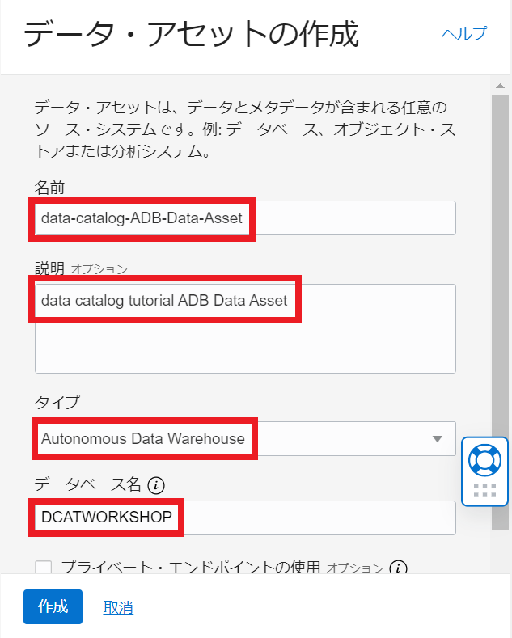
3-2. 接続の追加
データソースをデータ・アセットとして、データ・カタログに登録後、データ・アセットへの接続を作成します。なお、データソースへの接続は複数作成できます。
-
データ・アセット詳細画面のサマリータブの接続の追加をクリックします。 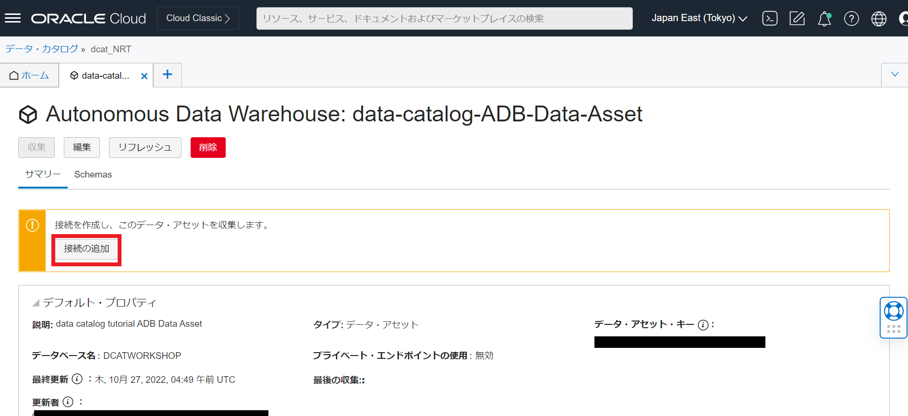
-
接続の追加パネルで、一意の接続名を入力します。
-
オプションの説明に、追加の目的等を入力します。
-
ドロップダウンリストタイプで、Genericをクリックします。
-
ラジオボタンウォレットの使用を選択し、ADWのクレデンシャル・ウォレット(zipファイル)をアップロードします。
-
ドロップダウンリストTNS別名で、ADWの接続サービスを選択します。今回は_lowを指定します。
-
ユーザー名は、ADMINユーザー、パスワードはADMINユーザーのパスワードを入力します。
-
この接続をデータ・アセットのデフォルトの接続にしたい場合は、チェックを入れます。
-
接続のテストをクリックすると、テスト接続が成功or失敗したか表示されます。 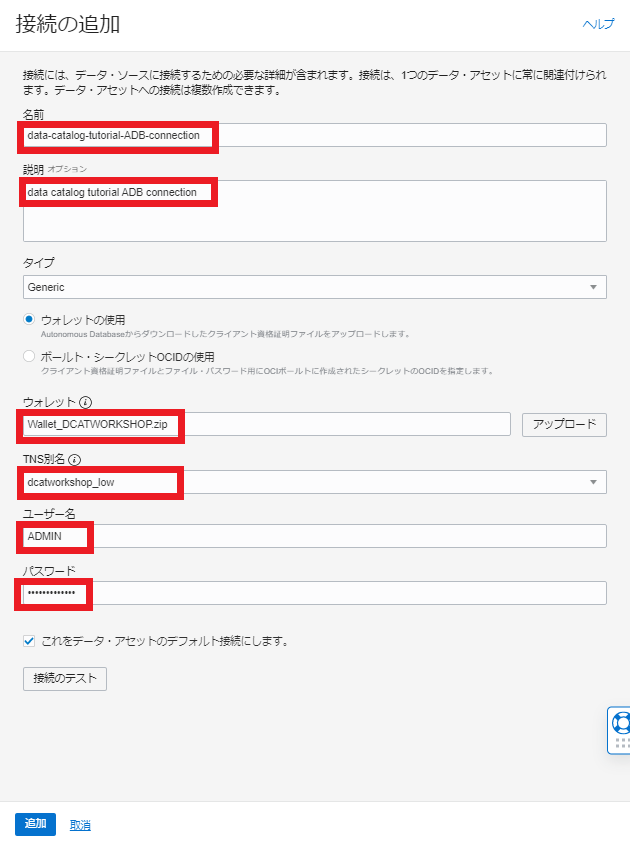
3-3. Autonomous Databaseからメタデータを収集
-
接続を追加後、データ・アセットのサマリータブの収集をクリックします。 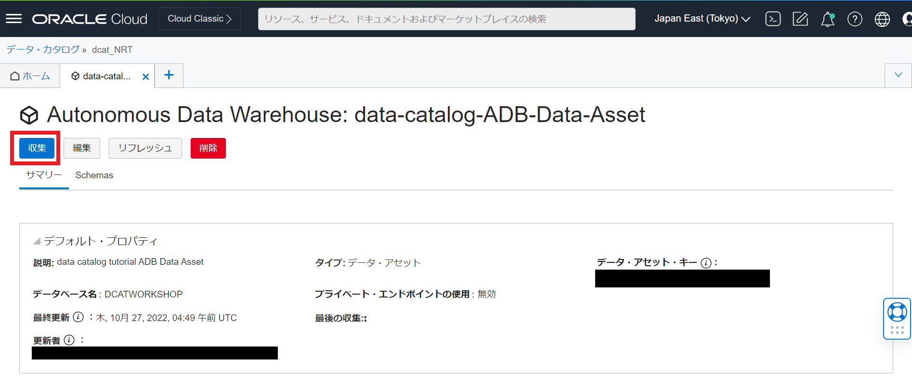
-
接続の選択では、デフォルト接続が選択された状態で表示されます。 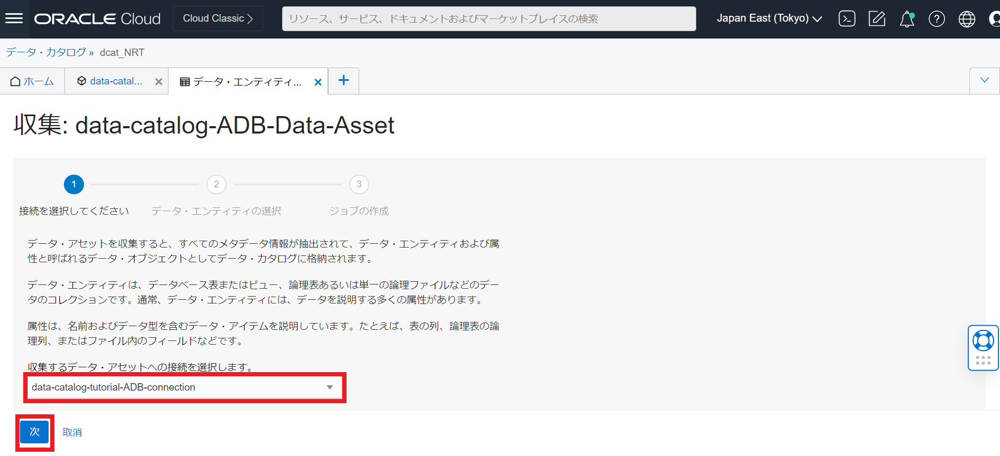
-
データ・エンティティの選択では、利用可能な全てのスキーマが表示されます。スキーマをエンティティとして追加もできますし、テーブル単位で追加することもできます。SALES_HISTORYスキーマを選択し、追加します。 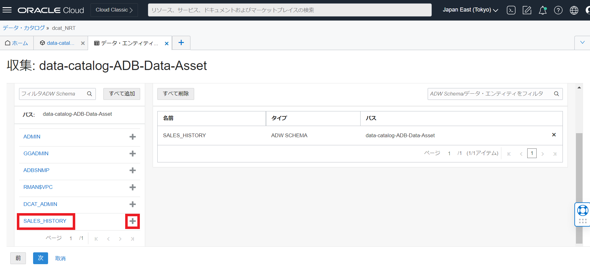
-
ジョブの作成タブが表示されるので、ジョブ名に一意の名前を入力します。オプションで説明を追加します。
-
このジョブの最初の実行以降に変更されたデータ・エンティティのみ収集する場合は、増分収集にチェックを入れます。
-
実行時間でジョブの実行時間を指定します。スケジューリングも可能ですが、今回はすぐに実行します。 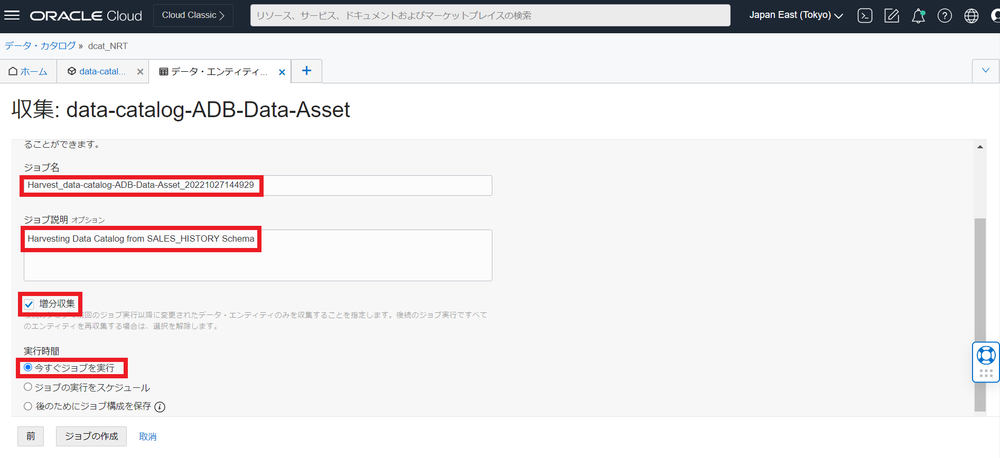
-
収集ジョブが正常に作成され、ジョブタブが表示されます。ここではジョブのステータスを確認したり、詳細を表示できます。
-
データ・アセットの詳細ページでSchemasをクリックし、リフレッシュを行うと、収集したスキーマが表示されます。 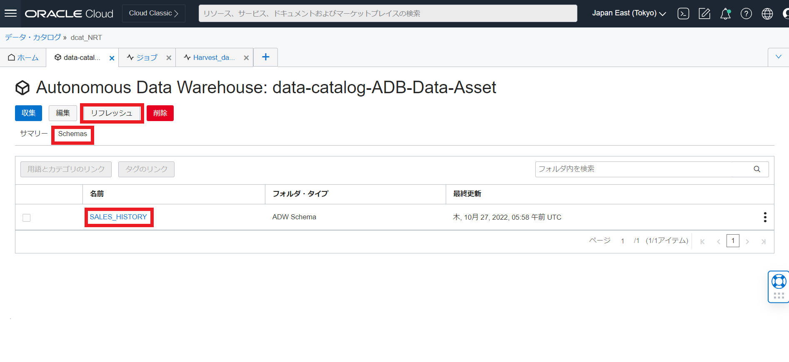
4. Object Storageからメタデータを収集
一般的に、データレイクには、半構造化ファイルや非構造化ファイルが含まれます。ファイルはさまざまな形式の独立したファイルであったり、Sparkジョブから得られるパーティション化されたファイルのときもあります。
データ・カタログを使用すると、これらのファイルを簡単に見つけ、解釈することに役立ちます。ここではObject Storageデータ・アセットを作成し、ファイル名パターンからデータを収集します。
4-1. 動的グループとポリシーの作成
OCI Object Storageに対してAPIコールを行うことを許可するポリシーを作成します。
ここの手順については、こちらをご参照ください。
4-2. Object Storageのデータ・アセットの作成
データ・カタログインスタンスのホーム画面のクイック・アクションからデータ・アセットの作成をクリックします。
データ・アセットの作成パネルでデータ・アセットの詳細を次のように指定します。
- 名前：Oracle-Object-Storage-Data-Asset
- タイプ：Oracle Object Storage
- URL：https://swiftobjectstorage.us-ashburn-1.oraclecloud.com
このチュートリアルでは、データが格納されている既存のOracle Object Storageバケットにアクセスします。このバケットは、us-ashburn-1リージョンのc4u04テナンシ―の中にあります。 次の手順では、事前認証済み要求(PAR)を使用して、データへの接続を追加します。PARの詳細はこちらをご参照ください。
- ネームスペース：c4u04
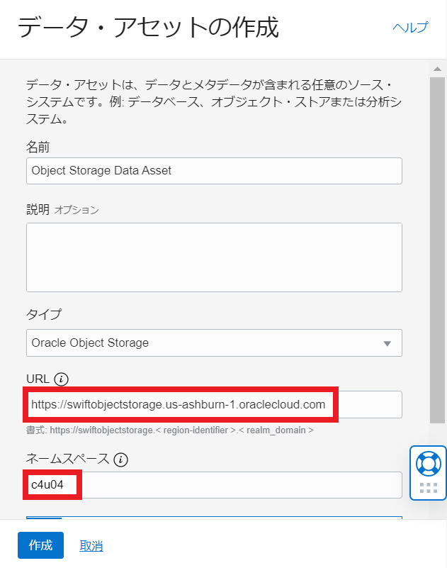
4-3. 接続の追加
3-2. 接続の追加と同様の手順でObject Storageへの接続を追加します。 接続の追加パネルで接続の詳細を次のように指定します。
- 名前：moviestream-landing-bucket-connection
- タイプ：Pre-Authenticated Request
- 事前認証済リクエストのURL：https://objectstorage.us-ashburn-1.oraclecloud.com/p/YtpqXpUpPx1pPXFQa4Githwxx4bxp12q2yZJsCyzN0Y9-kpYr5nAOvLvwZfLHxXF/n/c4u04/b/moviestream_landing/o/
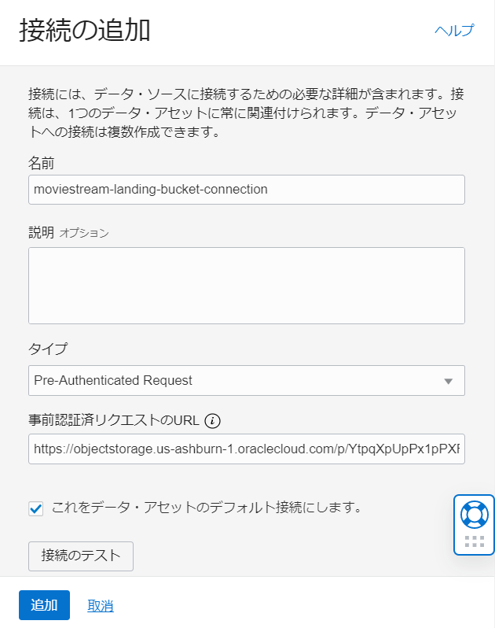
接続が正常に追加されると、moviestream-landing-bucket-connection データソース接続が接続セクションに表示されます。
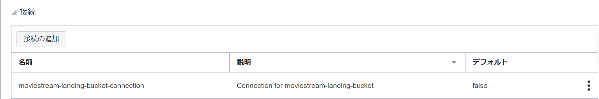
4-4. ファイル名パターンの作成とデータ・アセットへの割当て
データレイクには通常、1つのデータセットを表す多数のファイルがあります。データ・カタログでは、ファイル名パターンを使用して、複数のObject Storageファイルを論理データ・エンティティにグループ化することができます。
ファイル名パターンとは、ファイルの検索と検出に使用できる論理データ・エンティティを作成するための正規表現です。論理データ・エンティティを作成すると、データレイクのコンテンツを整理し、カタログのエンティティや属性が爆発的に増加するのを防ぐことができます。
-
データ・カタログインスタンスのホーム画面から＋をクリックし、ファイル名パターンをクリックします。 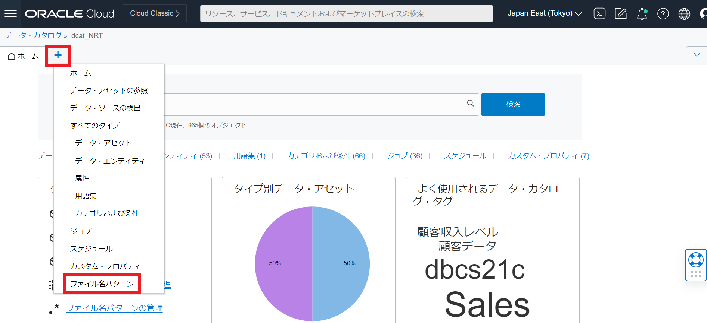
-
ファイル名パターンの作成をクリックし、パネルで次のように入力します。
- 名前：Map Object Storage Folders to DCAT Logical Entities
- 正規表現を選択
- 式：{bucketName:[A-Za-z0-9.-_]+}/{logicalEntity:[^/]+}/\S+$
パターンの例の表示をクリックすると、ファイル名、パターン式、およびパターン式に基づいて派生する論理データ・エンティティ名の例を表示できます。
- テスト式：以下のファイル名をテスト・ファイル名に入力
moviestream_landing/customer/customer.csv moviestream_gold/sales/time=jan/file1.parquet moviestream_gold/sales/time=feb/file1.parquet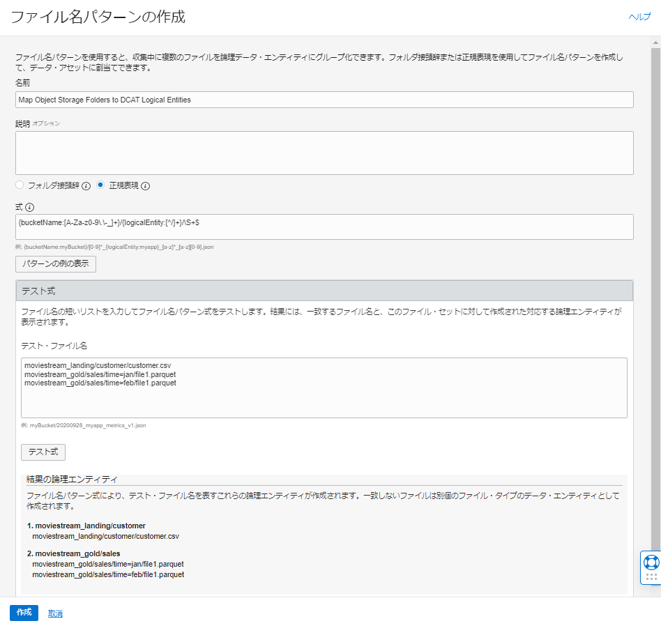
-
ファイル名パターンの作成後、それをデータ・アセットに割当てます。データ・アセットのリストから、Oracle Object Storage Data Assetを選択します。 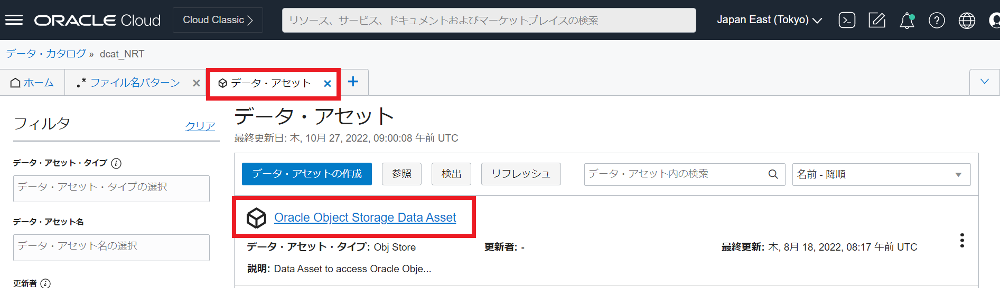
-
サマリータブの下部、ファイル名パターンセクションのファイル名パターンの割当てをクリックします。 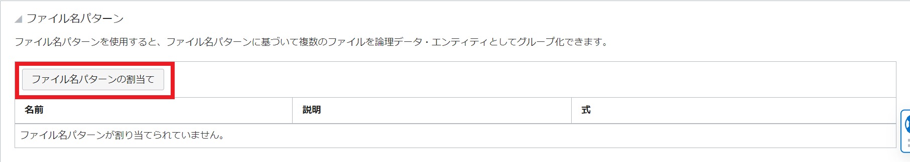
-
ファイル名パターンの割当てパネルから、このデータ・アセットに割り当てるファイル名パターンを選択します。Map Object Storage Folders to DCAT Logical Entitiesにチェックを入れ、割当てます。 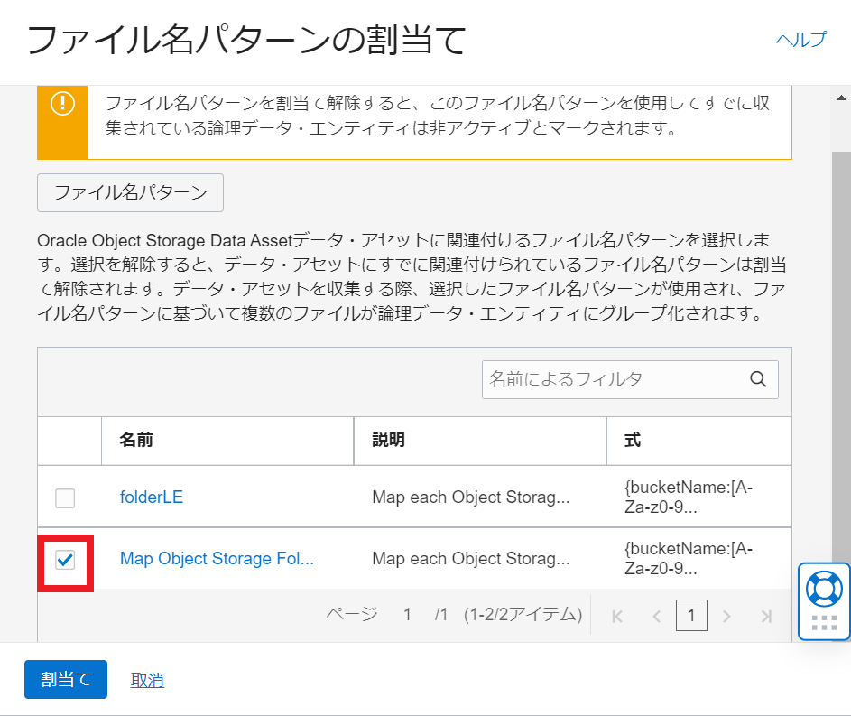
-
割当てが成功すると、このように表示されます。これにより、Object Storageバケット内のファイル名がパターン式と照合され、論理データ・エンティティが形成されます。 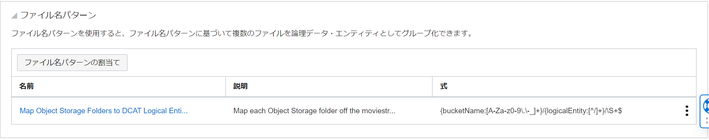
4-5. Object Storageからメタデータを収集
データ・アセットの作成後、Object Storageにあるデータの構造情報をデータ・カタログに収集し、そのデータ・エンティティと属性を表示することができます。
-
データ・アセットのリストから、Oracle Object Storage Data Assetを選択します。
-
Oracle Object Storage Assetページが表示されるので、収集をクリックします。 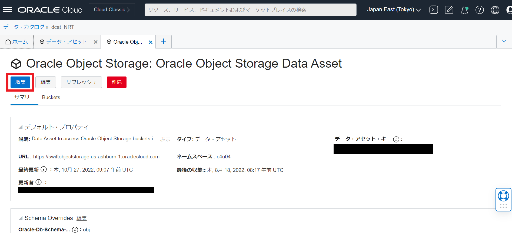
-
収集するデータ・アセットへの接続は、moviestream-landing-bucket-connectionを選択します。 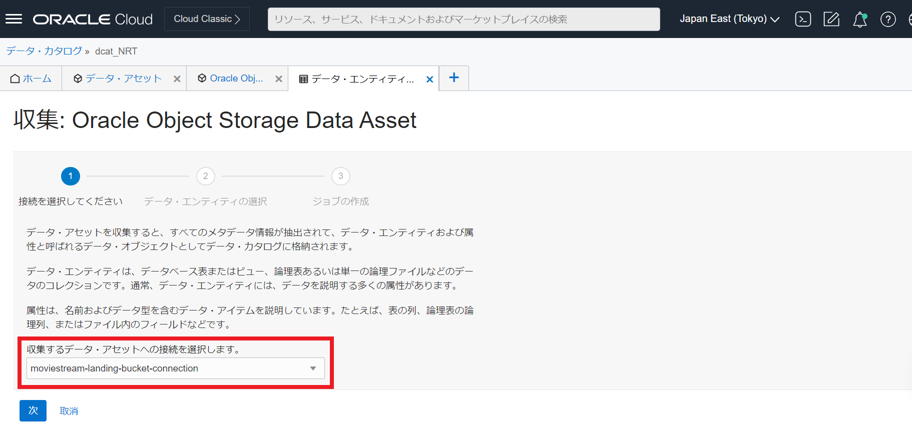
-
データ・エンティティの選択では、moviestream_landingを選択します。タイプは以下のようにBUCKETとなっています。 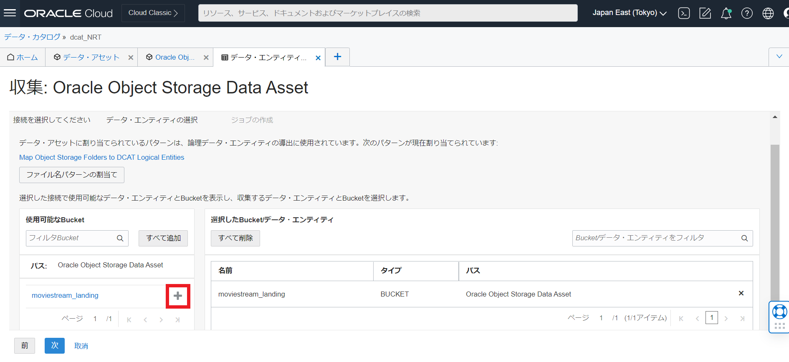
- ジョブの作成ページでは以下のように入力します。
- ジョブ名：デフォルトの名前のままにします。
- ジョブ説明：オプションの説明を入力します。今回は空白のままにしておきます。
- 増分収集：チェックは入れません。
- 認識できないファイルを含める：チェックは入れません。
- 一致ファイルのみを含む：チェックを入れます。Object Storage内の指定した割当てファイル名パターンに一致するファイルのみ収集する場合に選択します。一致しないファイルは収集されず、スキップされたファイルに追加されます。
- 実行時間：今すぐジョブを実行を選択 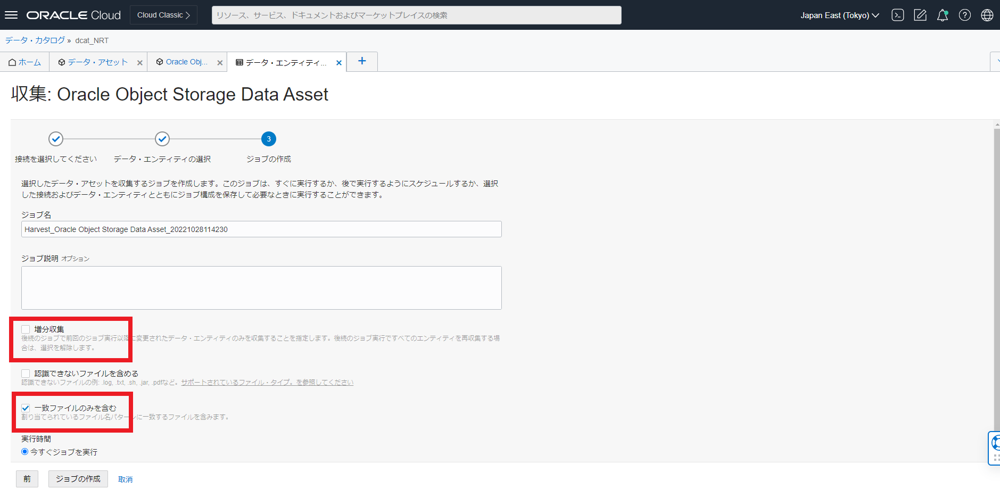
-
ジョブのタブが表示されています。このObject Storageのアセットに割り当てたファイル名パターンを使用して収集された論理エンティティの数として11と表示されています。この数は、moviestream_landingルートバケット下のサブフォルダの数を表しています。また、対応するファイルが57個あります。 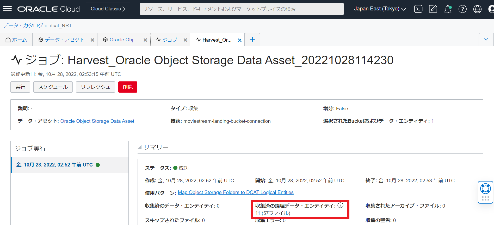
-
Oracle Object Storage Data Assetのページで、Bucketsタブをクリックし、リフレッシュをクリックすると、Landingが表示されます。 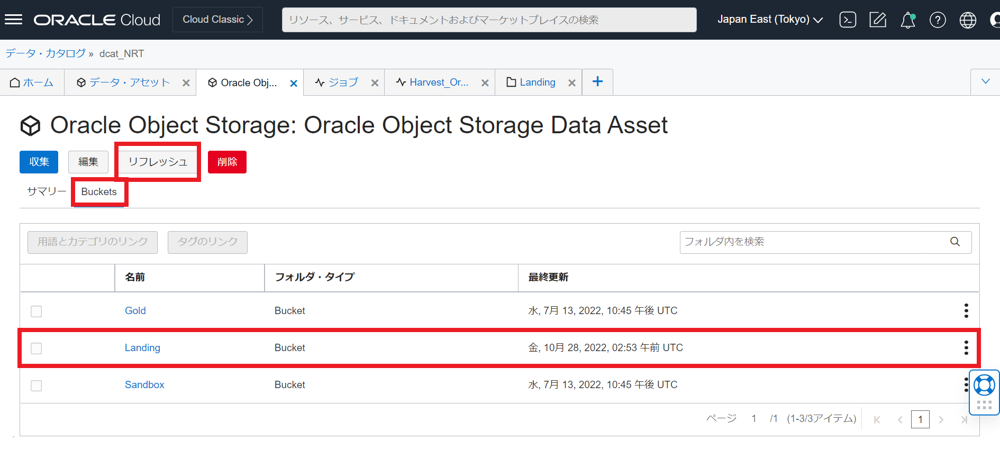
-
Landingの詳細ページに行き、データ・エンティティタブをクリックし、custsalesをクリックします。 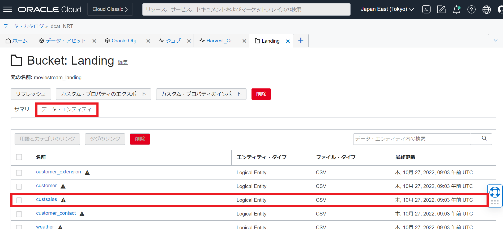
-
サマリータブが表示されます。ここでは、データ・エンティティのデフォルトプロパティ、カスタムプロパティ、ビジネス用語集の用語とカテゴリ、および推奨事項を確認できます。 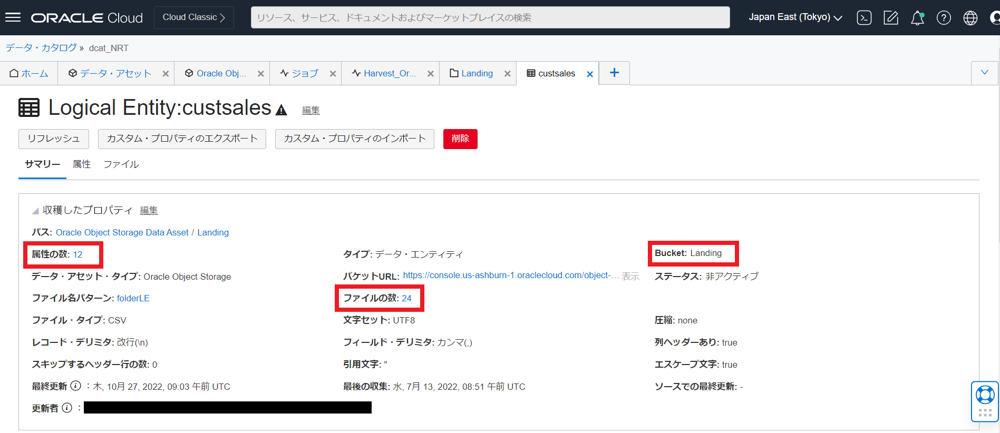
- 属性タブをクリックすると、データ・エンティティの属性を確認できます。 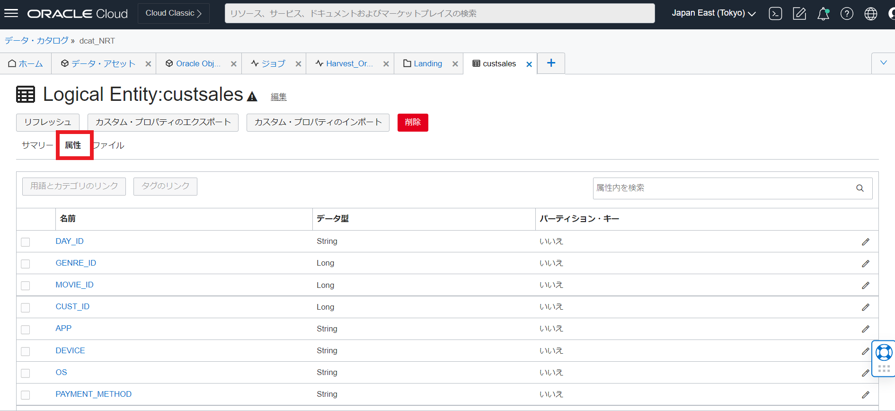
5. ビジネス用語集とカスタム・プロパティの作成
多くの組織では、ビジネスの概念や関連するデータに関する共通の用語がないために、コミュニケーションの問題や誤解が発生しています。例えば、「顧客」という単純な概念が、5つの異なる部門にとって5つの異なる意味を持つ可能性があります。顧客によっては、これらの概念をエクセル・シートやワード・ドキュメントで管理していますが、これは拡張性のあるモデルと言えません。ビジネス用語集は、組織で使用される用語を定義するものです。さらに、技術的なメタデータを用語集とリンクさせることも可能です。
本章では、データ管理者として、用語集を定義してみます。また、データの所有者を把握するため、Data Ownerというカスタムプロパティを作成します。
5-1. ビジネス用語集の作成
-
データ・カタログのホームタブから用語集をクリックします。 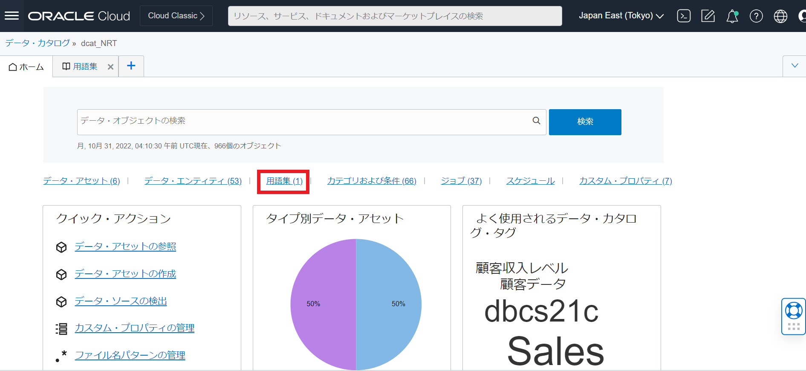
-
用語集の作成をクリックし、名前を入力します。data-catalog-tutorial-Glossaryとします。 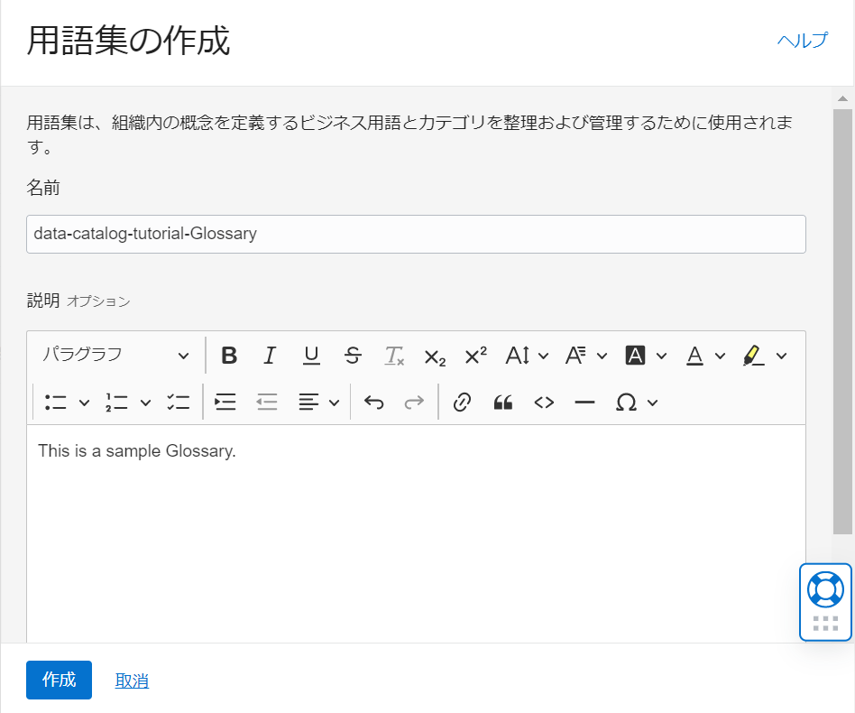
5-2. 用語集のインポート
カテゴリーと用語は、一つずつ作成するか、Excelファイルからインポートする方法があります。
-
インポートをクリックします。 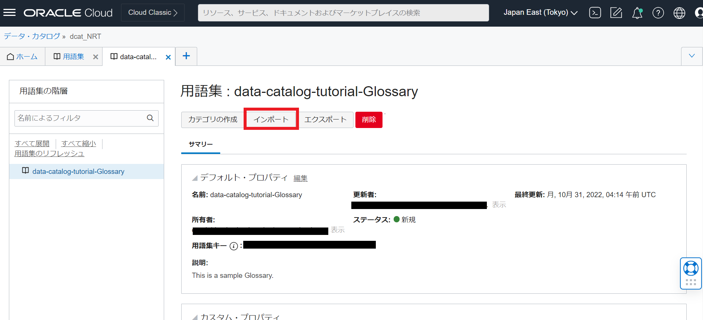
-
インポート時にリッチ・テキストの書式が失われる可能性があることを示すダイアログが表示されます。確認し、続行をクリックします。 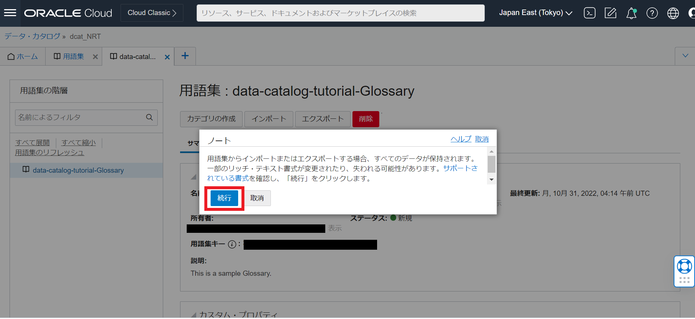
-
zipファイル内のdata-catalog-ADB-GlossaryExport.xlsxを選択します。
-
用語集のインポートジョブが正常に完了すると、Excelファイルの内容が用語集にインポートされ、左パネルに表示されます。 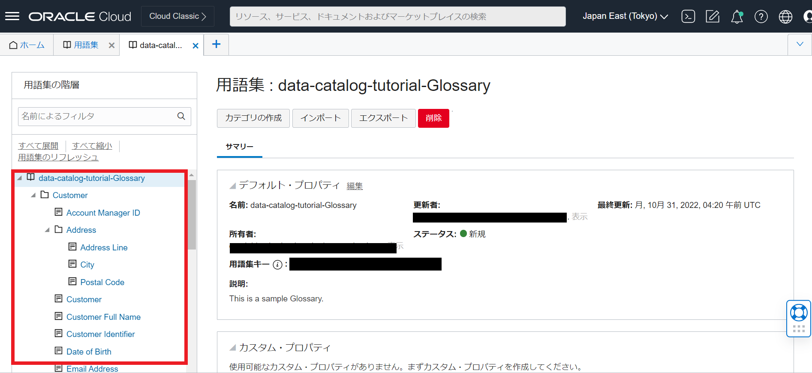
5-3. カテゴリーの作成
用語集では、各用語はカテゴリ内に作成する必要があるので、まずはカテゴリーを作成します。
-
用語集の詳細タブでカテゴリの作成をクリックします。 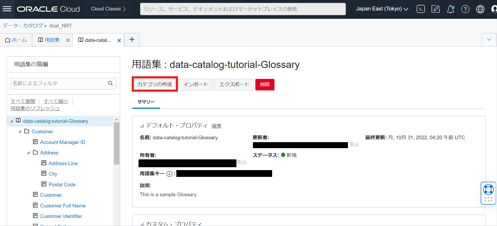
-
カテゴリの作成パネルで、名前と説明を入力します。 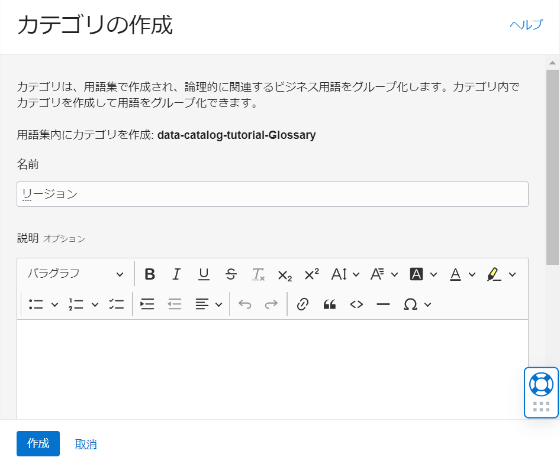
-
カテゴリが作成されると、用語集の詳細タブの階層リストに表示され、このカテゴリ内に用語を作成することができます。また、別のカテゴリの中にカテゴリを作成し、ネストされたカテゴリを作成することもできます。 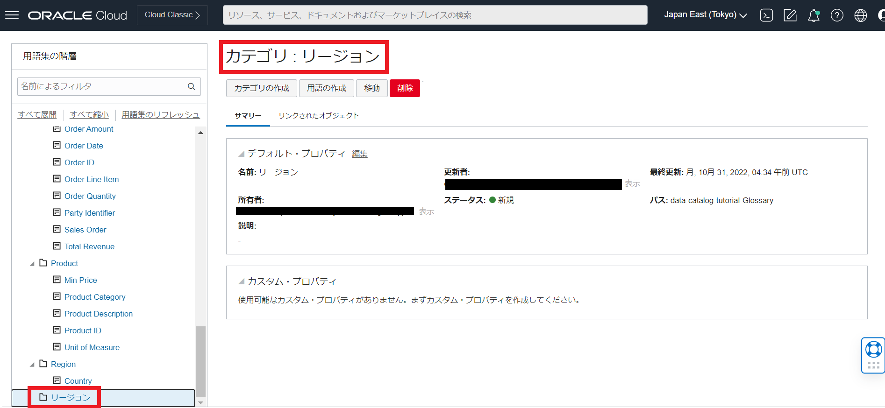
5-4. 用語の作成
収集されたデータ・エンティティおよび属性を分類するには、用語を使用します。各用語は、カテゴリ内で作成する必要があります。
-
カテゴリーの詳細タブで用語の作成をクリックします。 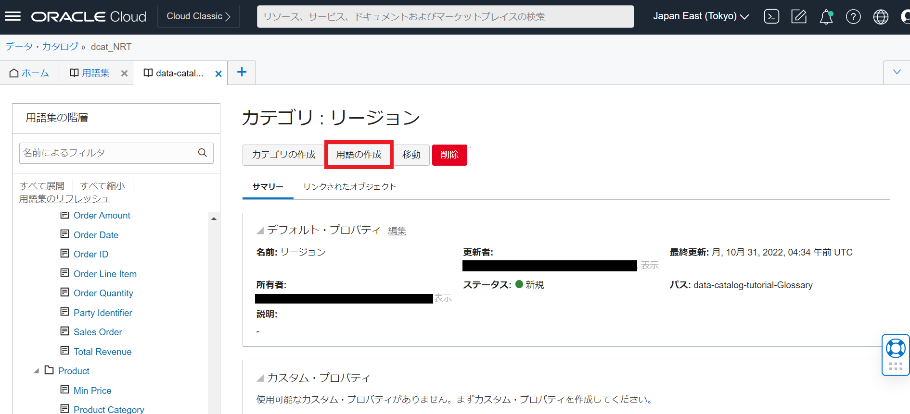
-
用語の作成パネルで名前と説明を入力します。 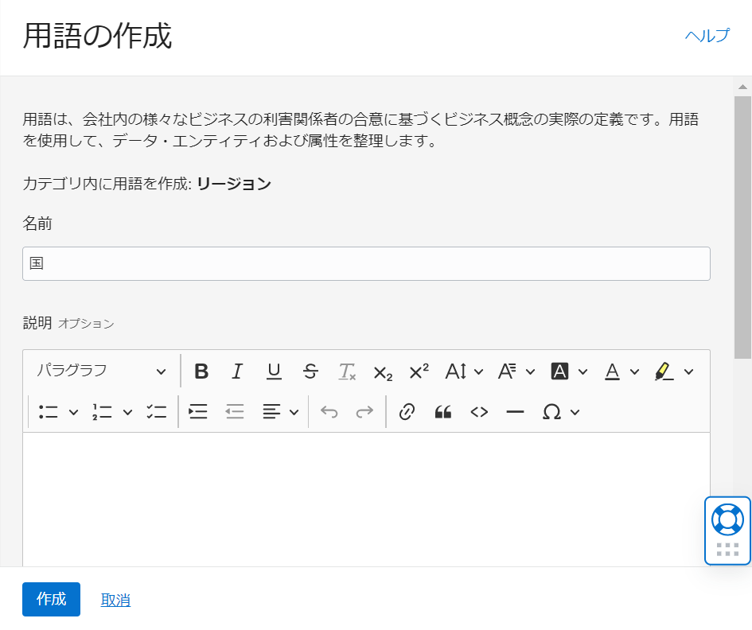
-
用語の作成が完了すると、カテゴリーリージョンの階層に国という用語が表示されます。 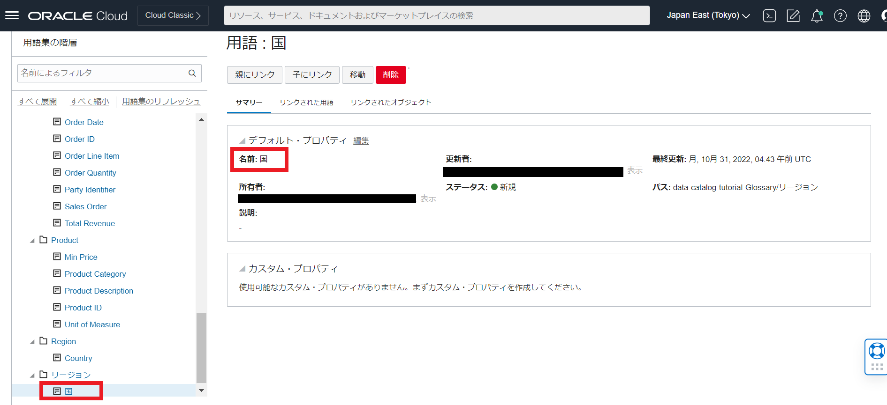
5-5. 用語集のエクスポート
カタログ内の用語集は、別のカタログにインポートするためにエクスポートすることができます。
-
用語集の詳細タブでエクスポートをクリックします。 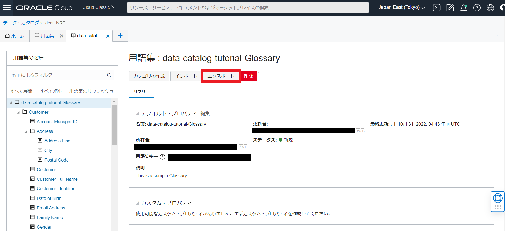
-
インポート時にリッチ・テキストの書式が失われる可能性があることを示すダイアログが表示されます。確認し、続行をクリックします。
-
Excelファイルで用語集のエクスポートできます。
-
ファイルを開いて詳細を確認します。 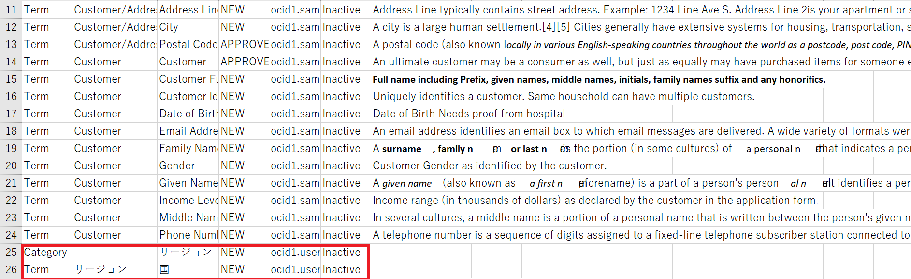
5-6. カスタム・プロパティの作成
カスタム・プロパティは、データ・カタログオブジェクトのビジネスのコンテキストを把握するためのメタデータを定義するために作成します。
データ・カタログを使ってメタデータを収集すると、データ・エンティティと属性のためのいくつかのデフォルト・プロパティがデータ・カタログに作成されます。例えば、説明や更新者、最終更新日などです。
しかし、デフォルト・プロパティだけでは、全てのコンテキストを把握するには十分でない場合があります。そのような場合に、ビジネス記述、更新頻度、認証ステータス、データ所有者などを追加することができます。これにより、データ利用者の理解や分類がしやすくなります。
-
データ・カタログのホームタブからカスタム・プロパティをクリックします。 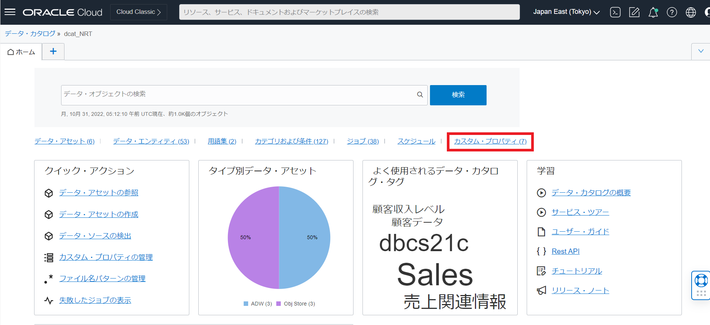
- カスタム・プロパティの作成をクリックし、作成パネルで以下を入力します。
- 名前：Data Owners
- データ型：String(Plain Text)
- 値リストの使用：チェックを入れます。
- 複数値の許可：チェックを入れます。
- 値リスト：Andrew, Brian, Clara, David
- データ・カタログ・オブジェクト・タイプ：Data Entity
- 検索結果に表示：チェックを入れます。
- フィルタリングを許可：チェックを入れます。
- ソートを許可：チェックを入れます。 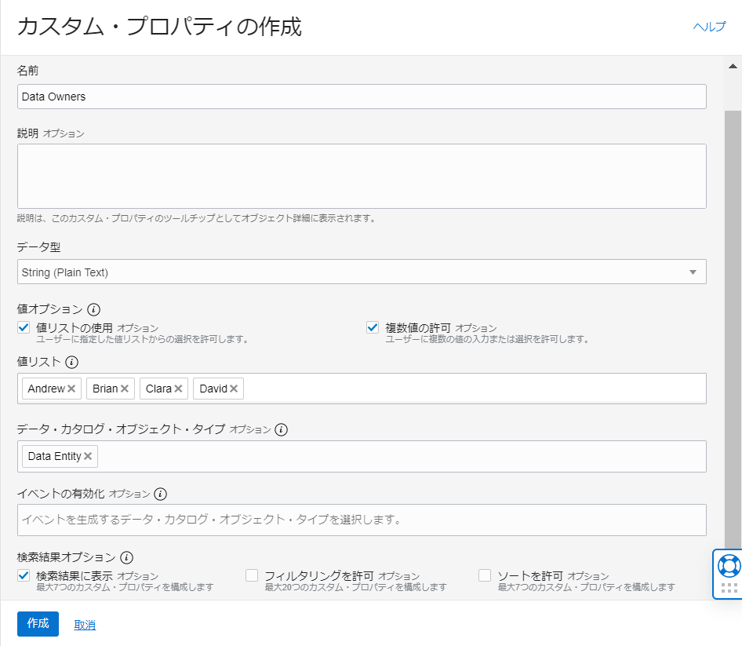
- カスタム・プロパティが作成できました。 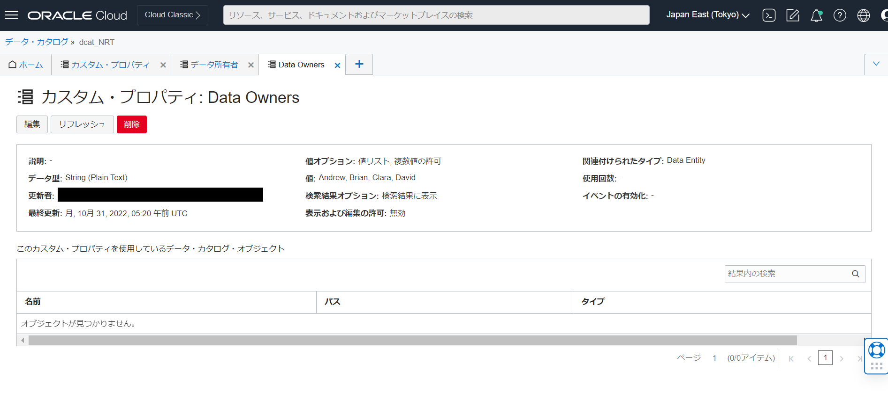
6. メタデータの補完
データソースから取得できるメタデータには、表名、列名、データ型などが含まれます。しかし、データ利用者としてはこれらのメタデータはデータを理解するのに十分な情報とは言えません。例えば、そのデータは何についてのもので、どのような用途に使われるのか、そのデータの所有者は誰かなどの情報です。
本章では、用語集とカスタム・プロパティを使用して、前章で収集したメタデータを補完します。
6-1. カタログ・オブジェクトのカスタム・プロパティの設定
カスタム・プロパティの値は、関連するタイプの各オブジェクトに設定することができます。
-
データ・カタログのホームタブからデータ・エンティティをクリックします。 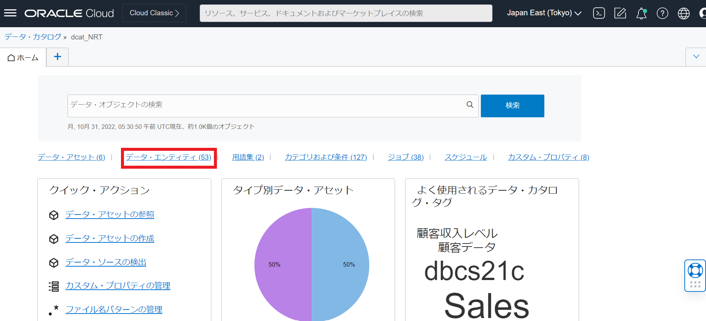
-
Table：CHANNELSをクリックし、詳細ページのCustom Propertiesの編集をクリックします。 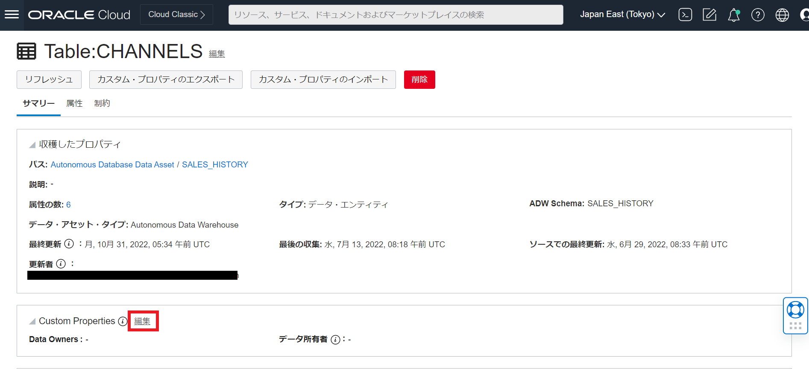
-
Data OwnersにAndrewとBrianを追加します。 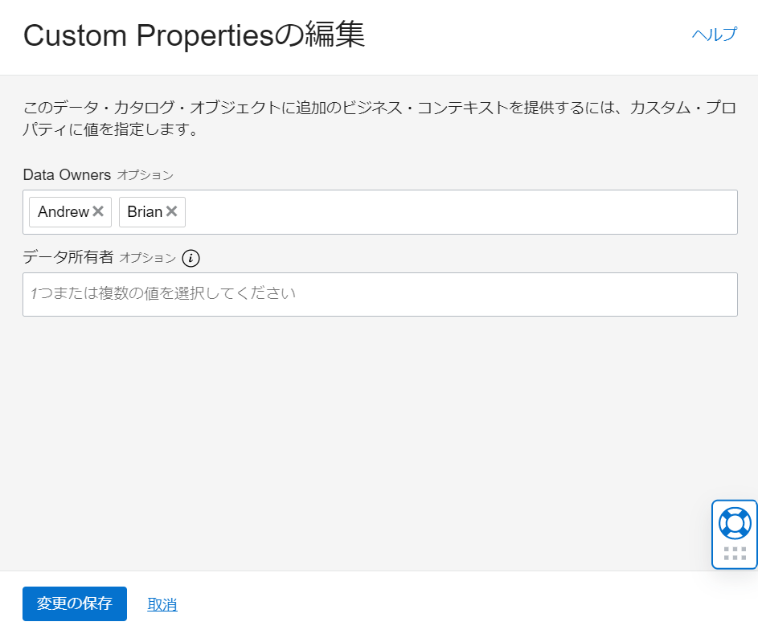
6-2. エクスポート/インポートを使ったカスタム・プロパティの一括設定
カタログ内のオブジェクトに、カスタム・プロパティの値を入力することは、データ量によっては大変な作業になり得ます。そのような場合には、カスタム・プロパティのエクスポート/インポートを使用して、一括して設定することができます。
-
データ・カタログのホームタブで、SALES_HISTORYと入力し、検索します。
-
SALES_HISTORYの詳細ページのカスタム・プロパティのエクスポートをクリックします。
-
カスタム・プロパティをエクスポートするオブジェクト・タイプを選択します。ここでは、Data EntitiesとAttributesを選択します。
-
エクスポートしたファイルから、データ・エンティティシートを開き、既存のカスタム・プロパティを確認します。
-
各オブジェクトのカスタム・プロパティに、値のセットを入力します。
-
カスタム・プロパティのインポートをクリックし、Excelファイルをインポートします。
-
正常にインポートが完了すると、データ・エンティティのリストにCOUNTRIESが追加されます。
6-3. タグのリンク
タグは、オブジェクトレベルで特定の詳細を記述するための自由形式の注釈です。タグのリンク機能を使うと、複数のデータ・エンティティに一括でタグを設定することができます。
-
データ・アセットの詳細ページでSalesというタグを作成します。
-
データ・エンティティのリストページでPRODUCTS、PROMOTIONS、SALESにチェックを入れます。
-
タグのリンクをクリックします。
-
タグの一覧が表示されるので、Salesを選択しリンクします。
これでタグのリンクができました。
6-4. 用語のリンク
カタログのオブジェクトに用語集をリンクすることも可能です。
-
データ・エンティティのリストページから、用語をリンクさせたいエンティティを選択します。
-
ページ下部用語とカテゴリのリンクをクリックします。
-
一覧表示されるので、検索ボックスにCountryと入力し、検索します。
-
用語の詳細ページでリンクされたオブジェクトタブをクリックします。
-
推奨事項欄で全てをチェックし、同意をクリックします。
-
これで用語がリンクされた全てのオブジェクトが表示されるようになります。
7. データの検索
データ・カタログを使用することでメタデータを収集し、ユーザーはビジネス用語や名前を使用して、関連するデータを検索することができます。
7-1. 検索フィールドの使用
ここでは、データアナリストとして、所得水準に基づく顧客の与信限度額を分析します。まずは検索フィールドを使用して、ブライアンが所有する顧客関連のデータ・エンティティを検索します。その後、与信限度額と所得水準に関連する属性を確認します。
-
検索フィールドにCUSTOMERと入力します。すると、候補となるテキストが表示されますので、選択します。
-
CUSTOMERが名前に含まれるオブジェクト一覧が表示されるので、フィルタを使用して結果を絞り込みます。まずオブジェクト・タイプをデータ・エンティティとし、さらにData OwnersをBrianでフィルタリングします。すると、これらのフィルタ条件に該当するエンティティが1つだけ表示されるはずです。
-
CUSTOMERSの詳細ページを見ると、属性の数が23となっています。
-
属性タブをクリックして、さらに属性を調べてみます。今回のユースケースに関連する属性である所得水準と与信限度額があるかどうか確認します。2ページ目にCUST_INCOME_LEVELとCUST_CREDIT_LIMITがあります。
7-2. データ・アセットの参照
データ・アセットの参照を使用すると、データ・カタログで作成されたすべてのオブジェクトを簡単に表示することができます。
-
ホームタブのクイック・アクションからデータ・アセットの参照をクリックします。
-
利用可能なすべてのデータ・アセットが表示されます。data-catalog-ADB-Data-Assetをクリックすると、その詳細を概要タブに表示されます。
-
Schemasタブをクリックすると、data-catalog-ADB-Data-Assetで利用可能なスキーマが表示されます。ここでは、SALES_HISTORYスキーマが表示されます。
-
さらに左枠のdata-catalog-ADB-Data-Assetをクリックすると、スキーマを掘り下げることができます。
-
さらにSALES_HISTORYをクリックすると、このデータ・アセットの下で利用可能なデータ・エンティティのリストが表示されます。
-
さらにCUSTOMERSをクリックすると、CUSTOMERS表の属性のリストが表示されます。
おわりに
本章では、データ・カタログを使ってメタデータを収集して、データの検索や理解に役立つ情報を確認する方法をご紹介しました。他にもビジネス用語集を使用して共通の用語を作成及び管理する方法やユーザー定義のカスタム・プロパティを作成し、各オブジェクトに固有の情報を設定する方法をご紹介しました。これにより、データアナリストやデータ利用者は効率的にデータを探索することができるようになります。
参考資料
以上でこの章は終了です。次の章にお進みください。